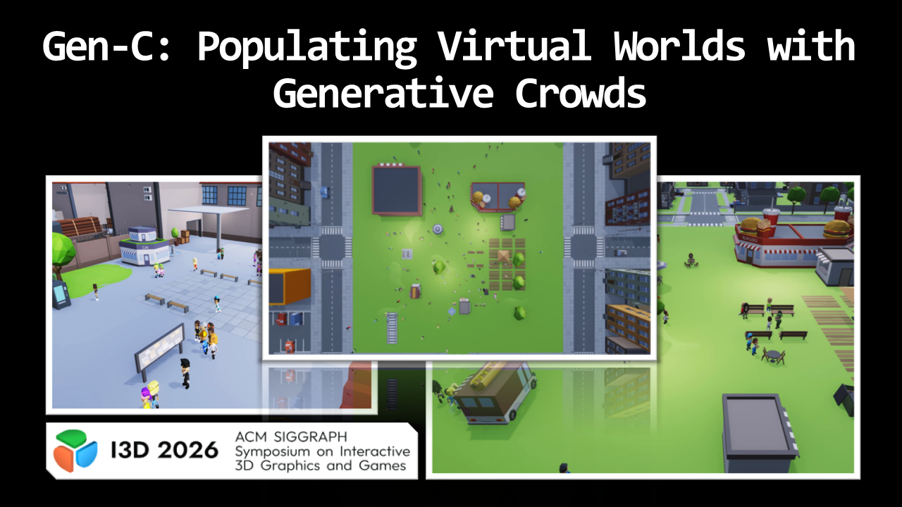

Gen-C: Populating Virtual Worlds with Generative Crowds
Andreas Panayiotou, Panayiotis Charalambous, and Ioannis Karamouzas
Proceedings of the ACM on Computer Graphics and Interactive Techniques, 9(1), I3D, 2026.
I3D 2026 Best Paper Award
Generating high-level crowd behaviors and interactions from text descriptions.